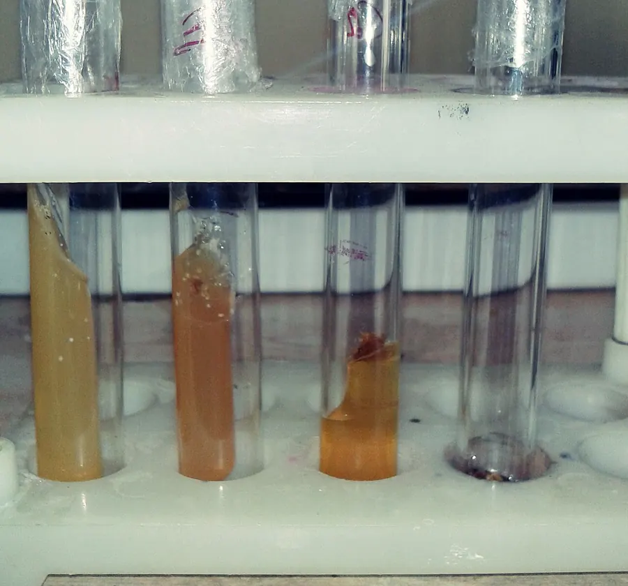
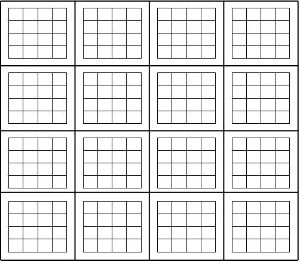
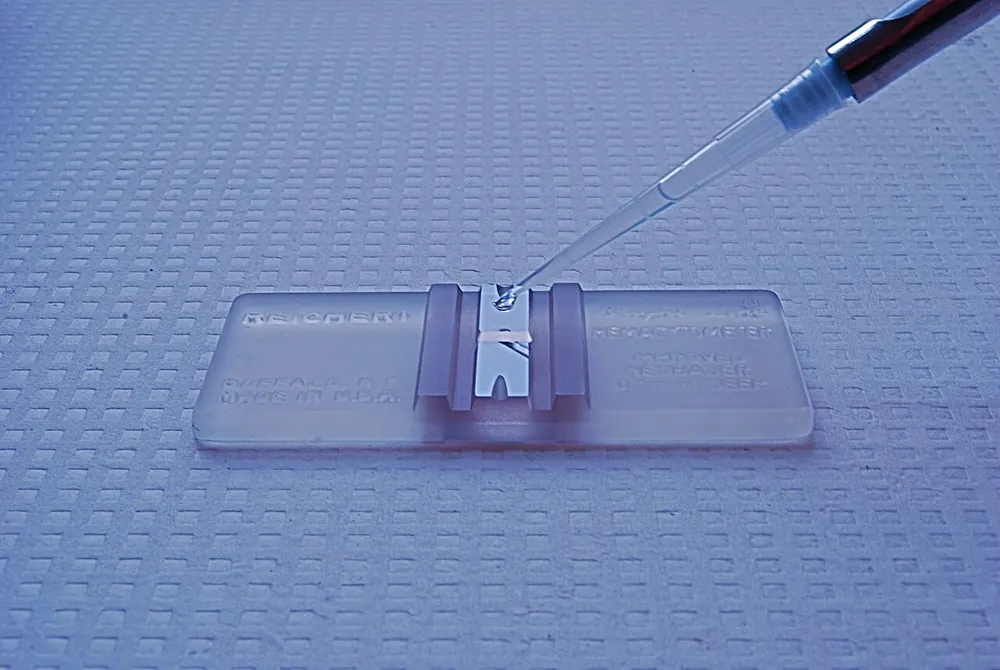
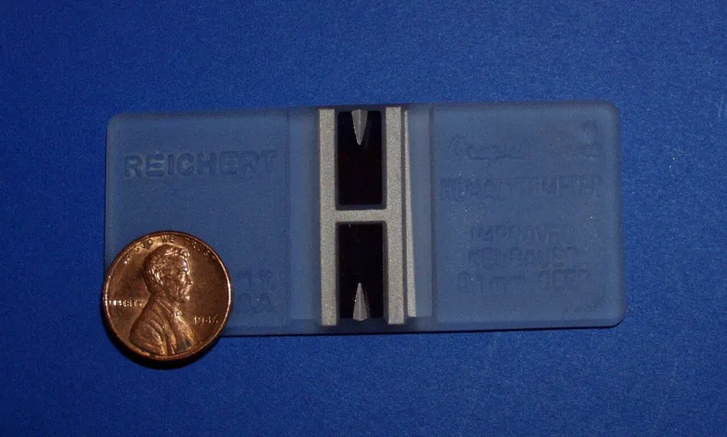

01Мета і план
Мета
Навчитися кількісно оцінювати ріст калюсної культури: визначати приріст сирої маси та індекс приросту, будувати S-подібну криву росту, підраховувати клітини методом Брауна і з’ясовувати, як гормональний склад середовища впливає на динаміку росту.
Знадобиться
- калюси томатів, топінамбура, картоплі, гвоздики на середовищах №1–4;
- аналітичні ваги, ламінар-бокс, чашки Петрі, пінцети, ланцети;
- мікроскоп, камера Фукса — Розенталя, покривні скельця;
- розчин для мацерації: 5 % хромова + 5 % соляна кислоти або 5–10 % HCl.
Ви дізнаєтеся
- як рахувати Wt − W0, приріст у % та індекс ΔW;
- чим відрізняються лаг-, експоненційна, лінійна, стаціонарна фази;
- звідки в формулі Брауна числа 0,2 і 103;
- як за масою клітини відрізнити ріст поділом від росту розтягненням.
02Теоретичні відомості
Як оцінюють ріст калюсу
Окремі калюси одного варіанту досліду різняться консистенцією, забарвленням, здатністю зеленіти на світлі та інтенсивністю росту, бо інокулюми (шматочки, які висаджують) беруть з різних ділянок вихідного калюсу. Тому кожен варіант закладають у шестикратній повторності — на шести однакових посудинах — і обчислюють середнє та стандартне відхилення (SD — міру розкиду значень навколо середнього).
Якісну оцінку (опис кольору, щільності, утворення органів) застосовують, вивчаючи органогенез — виникнення коренів і пагонів у калюсі (тема 4). Кількісну — коли досліджують, як на ріст впливають зовнішні чинники: гормони, температура, склад середовища. Визначають (с. 73):
- приріст сирої маси наприкінці досліду або в динаміці — через кожні 7 діб;
- індекс приросту маси за певний проміжок часу;
- накопичення сухої речовини (маси після висушування; у калюсу це лише ≈ 4–8 % сирої маси, решта — вода) у середній пробі;
- площу поверхні калюсу;
- кількість клітин — методом Брауна (ЛР 13).


Показники приросту
Нехай W0 — початкова маса калюсу (г), Wt — маса в момент t. Тоді абсолютний приріст, приріст у відсотках та індекс приросту:
ΔW — безрозмірний індекс приросту (сирої або сухої маси): у скільки разів калюс збільшив масу понад початкову. Наприклад, W0 = 0,100 г, W28 = 0,850 г: приріст 0,750 г, або 750 %, ΔW = 7,5.
Як доповнення до посібника корисні ще два показники. Питома швидкість росту μ = (ln W2 − ln W1)/(t2 − t1), доба−1 (ln — натуральний логарифм), показує, яку частку своєї маси калюс додає за добу; у експоненційній фазі вона максимальна й стала. Час подвоєння маси τ = ln 2/μ: за μ = 0,25 доба−1 маса подвоюється за 2,8 доби.
S-подібна крива росту
Якщо відкласти масу калюсу (або кількість клітин) за часом, отримаємо S-подібну криву. Посібник (с. 63–64) виділяє п’ять фаз і подальшу деградацію:
- Латентна, або лаг-фаза (від англ. lag — відставання): маса й кількість клітин майже не зростають, але клітини готуються до поділу.
- Логарифмічна (експоненційна): найбільша мітотична активність (частка клітин, що діляться); маса росте в геометричній прогресії — на графіку з логарифмічною віссю це пряма.
- Лінійна: швидкість росту (приріст за добу) стала.
- Уповільненого росту: мітотична активність різко знижується.
- Стаціонарна: крива виходить на плато — скільки клітин ділиться, стільки відмирає; швидкість наростання маси дорівнює нулю.
Далі настає деградація — кількість і маса живих клітин зменшуються, калюс буріє. Щоб культура не загинула, її пересаджують (пасирують) кожні 3–4 тижні. Найстаріший відомий штам — калюс моркви, отриманий французьким ученим Р. Готре (R. Gautheret) у 1938 р., який досі вирощують у лабораторіях світу; у Франції створено музей калюсних культур (с. 75). Загальні закономірності росту рослин — у статті Конспекту про криву росту; про отримання калюсу і пасаж — у темі 2.
Гормональний склад середовища (ЛР 14)
У ЛР 14 калюси висаджують на чотири варіанти середовища МС (Мурасіге — Скуга), що відрізняються лише одним регулятором росту в концентрації 0,2 мг/л (табл. 5 посібника): №1 — 6-БАП (6-бензиламінопурин, цитокінін — стимулює поділ), №2 — ГК3 (гіберелова кислота — стимулює розтягнення клітин), №3 — ІОК (індоліл-3-оцтова кислота, природний ауксин, швидко руйнується), №4 — НОК (α-нафтилоцтова кислота, синтетичний стійкий ауксин). Ріст калюсу відбувається або поділом клітин, або їх розтягненням (збільшенням об’єму за рахунок води), тож однаковий приріст маси може мати різну природу — це й показує підрахунок клітин. Про дію гормонів — у статті Конспекту про цитокініни й гібереліни.
| Компонент | №1 | №2 | №3 | №4 |
|---|---|---|---|---|
| Макросолі МС / мікросолі МС / вітаміни МС | 100 мл / 1 мл / 1 мл | |||
| Гідролізат казеїну · інозит | 500 мг · 100 мг | |||
| Fe-хелат · сахароза · агар | 5 мл · 20 г · 8 г | |||
| Регулятор росту | БАП 0,2 мг | ГК3 0,2 мг | ІОК 0,2 мг | НОК 0,2 мг |
| Вода | 865 мл | |||
Метод Брауна: мацерація і камера Фукса — Розенталя
Щоб порахувати клітини, тканину мацерують — розділяють на окремі клітини, розчиняючи кислотою пектинову серединну пластинку (шар, що склеює оболонки сусідніх клітин). Наважку калюсу 0,25 або 0,5 г заливають 5 мл суміші 5 % хромової і 5 % соляної кислот (або 5–10 % HCl) на 8–10 год; час підбирають дослідно: за коротшої мацерації клітини лишаються агрегатами (групами), за довшої — руйнуються. Перед підрахунком пробірку ретельно струшують, щоб суспензія була рівномірною; якщо клітини дрібні й їх забагато, суспензію розводять у 2 рази.
Камера Фукса — Розенталя — товсте предметне скло з вигравіюваною сіткою, над якою покривне скельце створює шар рідини завглибшки рівно 0,2 мм. Сітка має 16 великих квадратів 1 × 1 мм, розділених потрійними лініями; кожен великий квадрат поділено на 16 малих (0,25 × 0,25 мм). Скельце притирають до бічних граней, доки не з’являться кільця Ньютона — райдужні смуги інтерференції світла, які свідчать, що скло щільно прилягає і глибина справді 0,2 мм. Клітини рахують при збільшенні ×30–×100 у чотирьох великих квадратах по діагоналі сітки; камеру заповнюють тричі для кожної проби.






Щоб клітину на межі не порахувати двічі (у сусідніх квадратах), користуються загальним правилом лічильних камер: рахують клітини всередині квадрата і ті, що лежать на верхній і лівій межах, а клітини на нижній і правій межах не рахують. Кількість клітин в 1 г тканини (с. 74):
N — кількість клітин в 1 г тканини; n — середня кількість клітин в одному великому квадраті; V — об’єм суспензії (розчину для мацерації), мл; d — наважка, г; 0,2 — об’єм рідини над одним великим квадратом, мм3 (1 мм × 1 мм × 0,2 мм); 103 — перерахунок мм3 у мл (1 мл = 1000 мм3). Тобто n/0,2 — клітин у 1 мм3, ×103 — у 1 мл, ×V — в усій суспензії, ÷d — на 1 г тканини. У посібнику 0,2 названо «об’ємом камери», а 10 — «перерахунком»; точніше, це об’єм одного великого квадрата і множник 103 (усі 16 квадратів сітки мають об’єм 3,2 мм3). Якщо суспензію розводили, результат множать на ступінь розведення k.
Приклад: n = 40, V = 5 мл, d = 0,5 г → N = 40 · 5 · 103/(0,5 · 0,2) = 2,0·106 клітин/г. Середня маса однієї клітини:
У прикладі mкл = 0,5 мкг. Якщо за пасаж маса калюсу зросла, а mкл майже не змінилася — переважав поділ; якщо mкл зросла — розтягнення. Підрахунок має статистичну похибку: кількість клітин у квадраті підпорядковується розподілу Пуассона (розподілу випадкових подій), тож відносна похибка ≈ 1/√Σn — за 400 порахованих клітин ≈ 5 %.
Як влаштована модель
Посібник описує фази якісно, тому криву росту в моделі розраховано за механістичним наближенням (сира маса W, мг; сахароза S у флаконі, мг; мертва тканина Wd):
A(t) = (t/λ)3/(1 + (t/λ)3) — адаптація клітин у лаг-фазі; множник S/(KS + S) — забезпеченість цукром (20 г/л × 8 мл середовища = 160 мг у флаконі), який споживається з виходом ≈ 9 мг сирої маси на 1 мг сахарози; W·Wc/(W + Wc): поки калюс малий, діляться майже всі клітини (експонента), а коли великий — лише шар біля агару й поверхні, тож приріст за добу стає сталим (лінійна фаза); kd — відмирання, що зростає, коли цукор вичерпано (уповільнення → плато → деградація). Межі фаз модель знаходить за самою кривою: лаг — за перетином дотичної до ln W у точці найбільшої питомої швидкості з рівнем ln W0 (Zwietering et al., 1990), лінійна — доки швидкість ≥ 85 % максимуму, стаціонарна — |dW/dt| < 6 % максимуму. Відносні швидкості для середовищ №1–4 і частку приросту за рахунок поділу задано правдоподібно (посібник їх не наводить); у підрахунку клітин враховано глибину шару, розведення, агрегати й руйнування клітин.
Маса свіжого калюсу разом із водою.
(Wt − W0)/W0 — у скільки разів зросла маса понад початкову.
Початковий період без помітного росту: клітини готуються до поділу.
Частка клітин, що перебувають у поділі (мітозі).
Розділення тканини на окремі клітини розчиненням міжклітинної речовини.
Райдужні смуги між щільно притертими скельцями — ознака правильної глибини камери.
Кількість однакових посудин у варіанті досліду (тут — шість).
Стандартне відхилення — міра розкиду значень повторностей.
03Інтерактивна модель
Перша вкладка — ЛР 14: калюс обраної культури росте на чотирьох середовищах таблиці 5. Натисніть «Запустити»: кожні 7 діб калюси «зважують» (6 повторностей), точки з’являються на графіку, а таблиця 6 заповнюється. Смуги на графіку — фази S-кривої для виділеного середовища (оберіть його кнопкою або торкніться флакона). Друга вкладка — ЛР 13: приготуйте суспензію, заповніть камеру і порахуйте клітини самі — торкаючись їх у полі зору мікроскопа; модель підставить ваші числа у формулу (4) і порівняє з істинним значенням.
Динаміка росту калюсу на середовищах №1–4
Сира маса, індекс приросту, фази S-кривої; таблиця 6 посібника
Виділене середовище
Дослід
S-крива: сира маса калюсу, мг (смуги — фази для виділеного середовища)
Швидкість росту dW/dt, мг/доба
Як читати. Суцільна товста лінія — виділене середовище, пунктир — інші. Точки з «вусами» — середнє ± SD шести повторностей у дні зважувань. На графіку швидкості лінійна фаза — це «плече» з майже сталим dW/dt, стаціонарна — нуль, деградація — від’ємні значення. Суха маса — орієнтовна частка сухої речовини (на ГК3 калюс більш оводнений). Середня маса клітини зростає, коли калюс росте розтягненням, а не поділом.
Камера Фукса — Розенталя: рахуємо клітини самі
Наважка → мацерація → струшування → камера → підрахунок у 4 діагональних квадратах × 3 заповнення
Зразок калюсу
Мацерація й камера
Клітин у підрахованих квадратах (заповнення · квадрат)
Як читати. У полі зору — один великий квадрат (1 × 1 мм) із 16 малими; зелені межі — клітини на них рахують, червоні — ні. Торкніться клітини, щоб позначити її (ще раз — зняти позначку). «Перевірити» показує пропущені клітини (помаранчеві кола) і зайві позначки (червоні хрестики). Бліді пунктирні контури — зруйновані клітини, їх не рахують. На графіку золота лінія — очікувана кількість λ, пунктир — межі ±√λ випадкового (пуассонівського) розкиду.
04Хід лабораторних робіт
Робота 13. Підрахунок клітин за методом Брауна с. 73–75
Мета: підрахувати кількість клітин і визначити середню масу однієї клітини. Матеріали: мікроскопи, ваги, камера Фукса — Розенталя, предметні й покривні скельця, калюс гвоздики й топінамбура, стакани на 0,05–0,1 л, скляні палички.
- Взяти три наважки калюсу по 0,25 г або 0,5 г, помістити в пробірки й додати 5 мл розчину для мацерації.
- Мацерувати калюс топінамбура й гвоздики 8–10 год, підбираючи час для кожної культури дослідно, у суміші 5 % хромової і 5 % соляної кислот або в 5–10 % соляній кислоті.
- Ретельно струсити пробірку до рівномірної суспензії. Краплю суспензії скляною паличкою нанести на предметне скло, накрити покривним і оцінити розмір клітин під мікроскопом (×30); якщо клітини дрібні — розвести суспензію в 2 рази.
- Краплю суспензії помістити на лічильну сітку камери, накрити покривним скельцем, притираючи його до бічних граней до появи кілець Ньютона. При збільшенні ×30–×100 підрахувати клітини в чотирьох великих квадратах по діагоналі сітки.
- Камеру промити дистильованою водою, висушити фільтрувальним папером і заповнити знову; повторити тричі для кожної проби.
- Обчислити кількість клітин в 1 г тканини за формулою (4) і середню масу клітини за формулою (5).
У моделі — вкладка «ЛР 13».
Робота 14. Пересаджування калюсу на свіже середовище з різним складом гормонів с. 75–76
Мета: визначити динаміку росту калюсу залежно від гормонального складу середовища. Матеріали: ламінар-бокс, пінцети, ланцети, чашки Петрі, стерильні калюси, пеніцилінові флакони із середовищами різного складу.
- Приготувати середовища №1–4 (табл. 5) і автоклавувати 25 хв при 1 атм.
- На кожен варіант середовища у флакони висадити калюси томатів, топінамбура, картоплі, гвоздики (по 6 флаконів — шестикратна повторність).
- Вирощувати в термостаті при +23…26 °C, в абсолютній темряві й вологості повітря 70–80 %.
- Через кожні 7 діб визначати сиру масу калюсу й заносити в таблицю 6 (1, 7, 14, 21, 28-ма доба).
- Побудувати графіки динаміки росту: на горизонтальній осі — час (доби) для кожного варіанту, на вертикальній — масу калюсу, мг; розрахувати індекс приросту.
У моделі — вкладка «ЛР 14»; таблицю 6 можна завантажити у форматі CSV.
05Контрольні питання
1. Чому досліди з калюсом проводять у шестикратній повторності?
Інокулюми беруть з різних ділянок і різних калюсів, тому вони різняться консистенцією, кольором та інтенсивністю росту; повторності дозволяють отримати надійне середнє.
2. Як обчислити індекс приросту? Калюс мав 0,15 г, а через 28 діб — 0,96 г.
ΔW = (Wt − W0)/W0 = (0,96 − 0,15)/0,15 = 5,4; приріст 0,81 г, або 540 %.
3. Назвіть фази S-кривої і що відбувається в кожній.
Лаг (підготовка до поділу), експоненційна (найбільша мітотична активність), лінійна (стала швидкість), уповільнення (поділи різко падають), стаціонарна (поділ = загибель); далі — деградація.
4. Коли найкраще пасирувати калюс і чому?
Наприкінці лінійної фази чи на початку уповільнення: маса вже велика, а клітини ще активні; у стаціонарній фазі й під час деградації накопичується некроз.
5. Що означають числа 0,2 і 103 у формулі Брауна?
0,2 мм3 — об’єм рідини над одним великим квадратом (1 мм2 × 0,2 мм); 103 — перерахунок мм3 у мл.
6. Для чого скельце притирають до появи кілець Ньютона? Що буде, якщо цього не зробити?
Кільця свідчать, що глибина шару рівно 0,2 мм. Інакше шар глибший, у квадраті більше клітин — N буде завищено.
7. Порахуйте N: n = 32, V = 5 мл, d = 0,25 г, суспензію розведено вдвічі.
N = 32 · 5 · 2 · 103/(0,25 · 0,2) = 6,4·106 клітин/г; mкл = 106/N ≈ 0,16 мкг.
8. Як підрахунок клітин допомагає зрозуміти дію ГК3 і БАП?
За однакового приросту маси на ГК3 середня маса клітини більша — ріст іде розтягненням; на БАП — поділом, клітин більше, вони дрібніші.
06Література
- Мельничук, М. Д., & Кляченко, О. Л. (2014). Біотехнологія в агросфері: навчальний посібник (с. 73–76). НУБіП України.
- Бутенко, Р. Г. (1999). Биология клеток высших растений in vitro и биотехнологии на их основе. ФБК-Пресс.
- Brown, R., & Rickless, P. (1949). A new method for the study of cell division and cell extension with some preliminary observations on the effect of temperature and of nutrients. Proceedings of the Royal Society of London. Series B, 136(882), 110–125. https://doi.org/10.1098/rspb.1949.0013
- Gautheret, R. J. (1939). Sur la possibilité de réaliser la culture indéfinie des tissus de tubercules de carotte. Comptes Rendus de l’Académie des Sciences, 208, 118–120.
- Zwietering, M. H., Jongenburger, I., Rombouts, F. M., & van ’t Riet, K. (1990). Modeling of the bacterial growth curve. Applied and Environmental Microbiology, 56(6), 1875–1881. https://doi.org/10.1128/aem.56.6.1875-1881.1990
- Bhojwani, S. S., & Dantu, P. K. (2013). Plant tissue culture: An introductory text. Springer. https://doi.org/10.1007/978-81-322-1026-9
- Murashige, T., & Skoog, F. (1962). A revised medium for rapid growth and bio assays with tobacco tissue cultures. Physiologia Plantarum, 15(3), 473–497. https://doi.org/10.1111/j.1399-3054.1962.tb08052.x